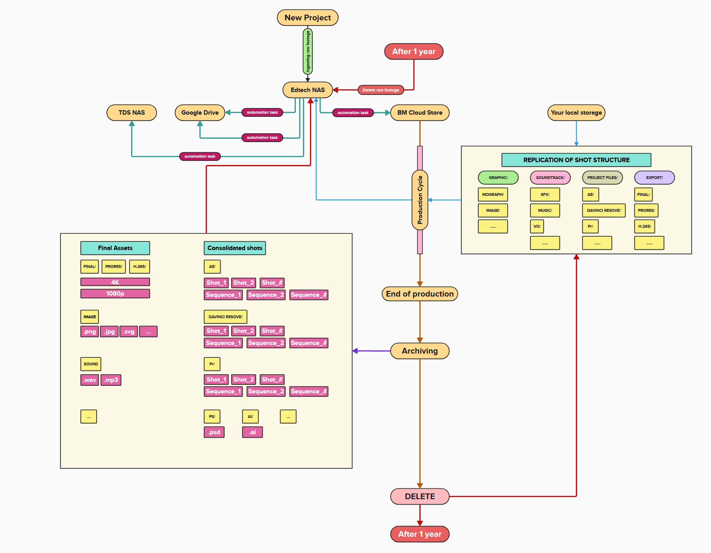

Raw footage from a new project is ingested onto the Edtech NAS — the central store everything else backs up from.
From Edtech NAS, three automated copy jobs push the same raw footage out to three separate destinations: TDS NAS, Google Drive, and Blackmagic (BM) Cloud Store. Three independent copies, so no single storage failure loses the footage.
During editing, Blackmagic Cloud Store stays synced with the editor's local storage through a mirrored shot structure — the same folder tree (Graphic/, Soundtrack/, Project Files/, Export/, each with their app-specific subfolders) exists in both places for the life of the production.
Once production wraps, an archiving step consolidates everything worth keeping into two packages, written back to Edtech NAS:
- Final Assets — rendered deliverables (FINAL/PRORES/H.265 in 4K & 1080p) plus final images and sound.
- Consolidated Shots — the full working project files (After Effects, DaVinci Resolve, Premiere, Photoshop, Illustrator), organized by Shot and Sequence.
Once the archive is confirmed on Edtech NAS, the working copies are deleted — including the Blackmagic Cloud Store shot-structure replication. The Edtech NAS archive is the copy of record from this point on.
Nothing in this pipeline is kept forever — two separate 1-year timers apply:
Intended to run as scripted/cron jobs with logs this page can eventually read for live last-run status. Until built, every step below is manual or nonexistent — check this list, not an assumption, before relying on any of it.